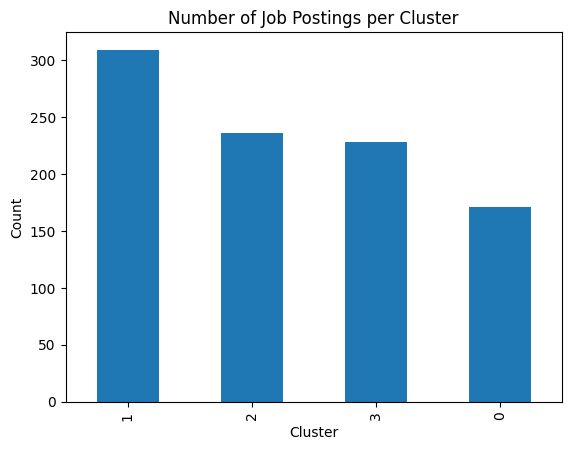
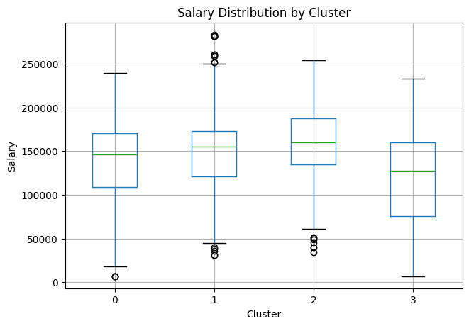

The dataset contained missing values across several fields such as seniority_level, status, salary, revenue, and ownership. Missing salary values were particularly common because many job postings did not disclose salary ranges. After transforming the salary column into numeric values (min, max, avg), these missing entries became explicit as NaN
Step 6 – Build feature matrix X for clustering and regression
Code
## Step 6 – Build feature matrix X for clustering and regression# 1) Skill featuresskill_cols = [c for c in df.columns if c.startswith("skill_")]# 2) Seniority dummiesseniority_cols = [ c for c in df.columnsif c.startswith("seniority_") and c !="seniority_level"]# 3) Status dummiesstatus_cols = [c for c in df.columns if c.startswith("status_")]# 4) Industry dummiesindustry_cols = [c for c in df.columns if c.startswith("industry_")]# Combine all featuresfeature_cols = skill_cols + seniority_cols + status_cols + industry_colsX = df[feature_cols]X.dtypes.head(), X.shape
from sklearn.preprocessing import StandardScalerscaler = StandardScaler()X_scaled = scaler.fit_transform(X)X_scaled.shape
(944, 32)
Code
#Elbow plot to determine optimal kfrom sklearn.cluster import KMeansimport matplotlib.pyplot as pltinertias = []K =range(2, 11)for k in K: km = KMeans(n_clusters=k, random_state=42) km.fit(X_scaled) inertias.append(km.inertia_)plt.figure(figsize=(6, 4))plt.plot(K, inertias, marker="o")plt.xlabel("Number of clusters k")plt.ylabel("Inertia")plt.title("Elbow Plot for K-Means")plt.show()
We selected k = 5 because the reduction in inertia begins to slow after five clusters. While the elbow is not very sharp, k = 5 marks the point where additional clusters provide smaller incremental improvements, making it a reasonable balance between simplicity and segmentation quality.
Code
#Fit K-means with chosen kk =5kmeans = KMeans(n_clusters=k, random_state=42)df["cluster"] = kmeans.fit_predict(X_scaled)df["cluster"].value_counts()
Although the inertia curve suggested both 4 and 5 as reasonable options, the 5-cluster solution produced a very small cluster (7 observations), which limits interpretability. Therefore, we selected k = 4, ensuring all clusters are large, stable, and meaningful for analysis.
#lets make a table cluster_centers = pd.DataFrame( kmeans.cluster_centers_, columns=X.columns, index=[f"cluster_{i}"for i inrange(k)])cluster_centers.style.background_gradient( cmap="coolwarm"# red = high, blue = low)
skill_python
skill_sql
skill_spark
skill_r
skill_scala
skill_docker
skill_tableau
skill_powerbi
skill_tensorflow
skill_pytorch
skill_machine_learning
skill_deep_learning
skill_aws
skill_azure
skill_gcp
seniority_junior
seniority_lead
seniority_midlevel
seniority_senior
seniority_unknown
status_hybrid
status_on-site
status_remote
status_unknown
industry_education
industry_energy
industry_finance
industry_healthcare
industry_logistics
industry_manufacturing
industry_retail
industry_technology
cluster_0
0.463923
-0.094527
0.479443
0.600192
0.298335
0.760944
-0.124916
-0.019252
1.772486
1.836619
0.623998
1.147535
0.687033
0.772292
0.792742
0.090010
0.017586
-0.206620
0.234329
-0.260525
0.091914
-0.117267
-0.130409
0.139790
-0.101678
-0.009069
0.051324
-0.021373
0.204854
-0.086433
0.001352
-0.005122
cluster_1
0.495273
0.501466
0.166063
0.578189
0.284649
-0.162708
0.158013
0.117237
-0.323888
-0.395593
0.419866
-0.101473
0.051005
-0.058847
-0.140399
-0.124625
0.079153
-0.229183
0.280120
-0.260525
-0.013746
0.573289
-0.094185
-0.544479
-0.051142
-0.084583
0.032522
-0.001925
-0.065233
0.064455
0.433649
-0.276256
cluster_2
-1.287720
-0.827945
-0.453453
-1.598912
-0.314567
-0.246321
-0.296855
-0.164935
-0.460228
-0.431196
-1.236186
-0.482054
-0.487647
-0.431790
-0.328815
-0.112156
-0.025813
-0.264329
-0.166378
0.781575
0.320030
-0.111053
0.339527
-0.428902
-0.082975
0.037823
-0.071403
-0.071074
0.000000
0.012348
-0.257523
0.274508
cluster_3
0.313737
0.248272
-0.115278
0.421272
-0.283922
-0.095231
0.186808
0.026274
-0.414034
-0.395007
0.242533
-0.224160
-0.079643
-0.052525
-0.063926
0.217482
-0.093744
0.739172
-0.383167
-0.260525
-0.381566
-0.574058
-0.125988
1.077021
0.231455
0.082283
-0.008660
0.092206
-0.065233
-0.035310
-0.322164
0.094102
Cluster 0: represents Machine Learning Engineers/AI Engineers, characterized by the strongest deep learning stack (TensorFlow, PyTorch, ML, DL), the broadest cloud expertise (AWS/Azure/GCP), and robust programming (Python, R, Docker). They are more common in logistics and rarely appear in manufacturing, and they tend to work in hybrid settings rather than fully on-site roles.
Cluster 1 represents senior Data Engineering and Analytics Engineering roles. These jobs show the highest proficiency in Python, SQL, Spark, Scala, and Tableau, and appear predominantly in finance, healthcare, manufacturing, and retail. The strong presence of lead-level roles and on-site work further indicates a traditional enterprise engineering environment rather than modern remote ML roles.
Cluster 2 consists of low-information or non-technical data roles. These job postings show the lowest levels of programming, analytics, cloud, and machine learning skills across all clusters. They also contain the highest proportion of unknown seniority and are most frequently remote or hybrid. The absence of clear technical requirements and the inconsistent industry pattern suggest that these positions are general data-related or support roles rather than specialized data engineering, analytics, or machine learning positions.
Cluster 3 represents mid-level generalist data roles, including Data Analysts and Data Scientists who work across education, energy, and technology sectors. These jobs show strong Python, SQL, and Tableau usage, moderate R, and only limited machine learning depth. The seniority pattern is centered on mid-level positions, indicating roles that require solid technical competence without the advanced ML or engineering specialization seen in Clusters 0 and 1.
The purpose of K-means clustering is to uncover natural job families based on shared skill profiles, seniority, and industry characteristics. By grouping similar postings together without using salary, we can identify distinct job types and then compare their compensation and skill requirements in subsequent analysis.
Code
df["cluster"].value_counts().plot(kind="bar")plt.title("Number of Job Postings per Cluster")plt.xlabel("Cluster")plt.ylabel("Count")plt.show()

Code
df.boxplot(column="salary_avg", by="cluster", figsize=(7,5))plt.title("Salary Distribution by Cluster")plt.suptitle("")plt.xlabel("Cluster")plt.ylabel("Salary")plt.show()

Supervised Regression Modeling for Salary Prediction
Code
# ===== Block 1 – Clean skill columns =====# 1) Define the *valid* skills you actually care aboutskill_keywords = ["python", "sql", "spark", "r", "scala", "docker","excel", "tableau", "power bi","tensorflow", "pytorch", "machine learning", "deep learning","aws", "azure", "gcp"]valid_skill_cols = ["skill_"+ kw.lower().replace(" ", "_") for kw in skill_keywords]# 2) Find ALL columns that start with "skill_"all_skill_cols = [c for c in df.columns if c.startswith("skill_")]# 3) Anything that starts with "skill_" but is not in our valid list is garbageextra_skill_cols = [c for c in all_skill_cols if c notin valid_skill_cols]print("Extra / invalid skill columns to drop:")print(extra_skill_cols)# 4) Drop the garbage columnsdf = df.drop(columns=extra_skill_cols)
Extra / invalid skill columns to drop:
['skill_powerbi']
Code
# ===== Block 2 – Build X and y for salary regression (robust) =====# Make sure salary_avg exists and is numericdf["salary_avg"] = df["salary_avg"].astype(float)# Drop rows with missing salaryreg_df = df.dropna(subset=["salary_avg"]).copy()# Skills (already cleaned)skill_cols = valid_skill_cols# Seniority / status / industry dummiesseniority_cols = [c for c in reg_df.columns if c.startswith("seniority_") and c !="seniority_level"]status_cols = [c for c in reg_df.columns if c.startswith("status_")]industry_cols = [c for c in reg_df.columns if c.startswith("industry_")]# All desired featuresfeature_cols = skill_cols + seniority_cols + status_cols + industry_cols# Keep only columns that actually exist in reg_dfavailable_features = [c for c in feature_cols if c in reg_df.columns]missing_features =sorted(set(feature_cols) -set(available_features))print("Number of desired features:", len(feature_cols))print("Number of available features:", len(available_features))if missing_features:print("\nThese expected features were NOT found in reg_df and will be ignored:")for c in missing_features:print(" -", c)# Build X and yX = reg_df[available_features].astype(float)y = reg_df["salary_avg"].astype(float)
Number of desired features: 33
Number of available features: 31
These expected features were NOT found in reg_df and will be ignored:
- skill_excel
- skill_power_bi
Code
from sklearn.model_selection import train_test_splitX_train, X_test, y_train, y_test = train_test_split( X, y, test_size=0.3, random_state=42)X_train.shape, X_test.shape, y_train.shape, y_test.shape
((415, 31), (179, 31), (415,), (179,))
Code
import statsmodels.api as smimport numpy as np# 1. Make sure X_train is purely numeric (float)X_train_sm = X_train.astype(float)# 2. Add intercept termX_train_sm = sm.add_constant(X_train_sm)# 3. Ensure y is numeric 1-D arrayy_train_sm = y_train.astype(float)# 4. Fit OLS modelols_model = sm.OLS(y_train_sm, X_train_sm).fit()# 5. Show R-style summary: coefficients, p-values, R², etc.print(ols_model.summary())